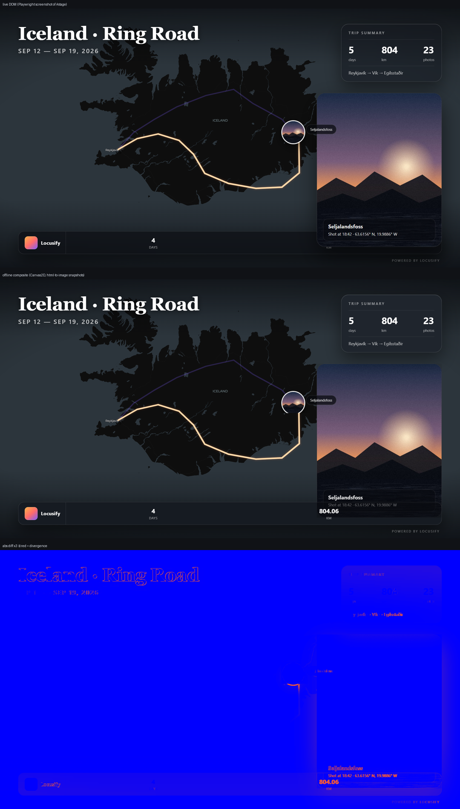
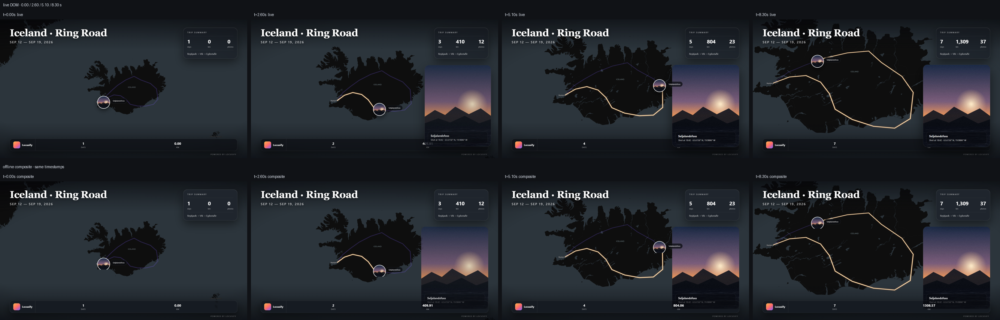
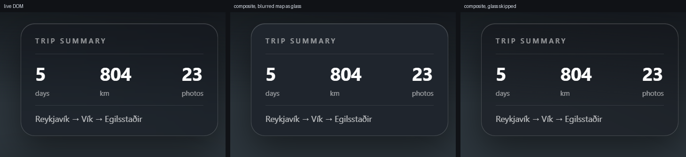
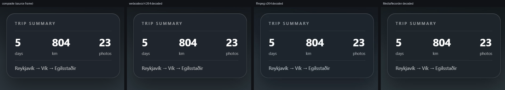

Chrome 155 · 1920×1080@30fps · 10 s 时间线 · 300 帧 · 与真实 UI 逐帧对照


| 时刻 | PSNR | SSIM | 平均绝对误差 | 差值 >40 的像素 |
|---|---|---|---|---|
| 0.00 s | 30.13 dB | 0.9894 | 1.23 | 0.33 % |
| 2.60 s | 25.82 dB | 0.9599 | 3.09 | 1.31 % |
| 5.10 s | 27.82 dB | 0.9869 | 1.81 | 0.51 % |
| 8.30 s | 27.73 dB | 0.9887 | 1.81 | 0.51 % |

backdrop-filter 的差距只有 PSNR 41.16 dB / SSIM 0.998，肉眼不可分辨；跳过玻璃则会明显发灰、失去层次。
| 编码器 | 产物 / 体积 | PSNR | SSIM | 300 帧耗时 | 相对实时 |
|---|---|---|---|---|---|
| WebCodecs H.264 High | mp4 · 13.23 MB | 48.63 dB | 1.0000 | 7.40 s | 1.35× |
| MediaRecorder VP9 | webm · 10.62 MB | 46.13 dB | 0.9999 | 10.00 s | 1.00× |
| ffmpeg.wasm x264 | mp4 · 1.68 MB | 41.08 dB | 0.9997 | 34.4 s | 0.29× |
VideoEncoder（avc1.640028，失败降级 vp09）+ mediabunny 出 MP4。getDisplayMedia 抓屏，但把流直接喂 WebCodecs，去掉 WebM→MP4 中转。完整文字版：reports/export-bench/report.md；原始数据：reports/export-bench/metrics.json、reports/export-bench/fidelity.json。